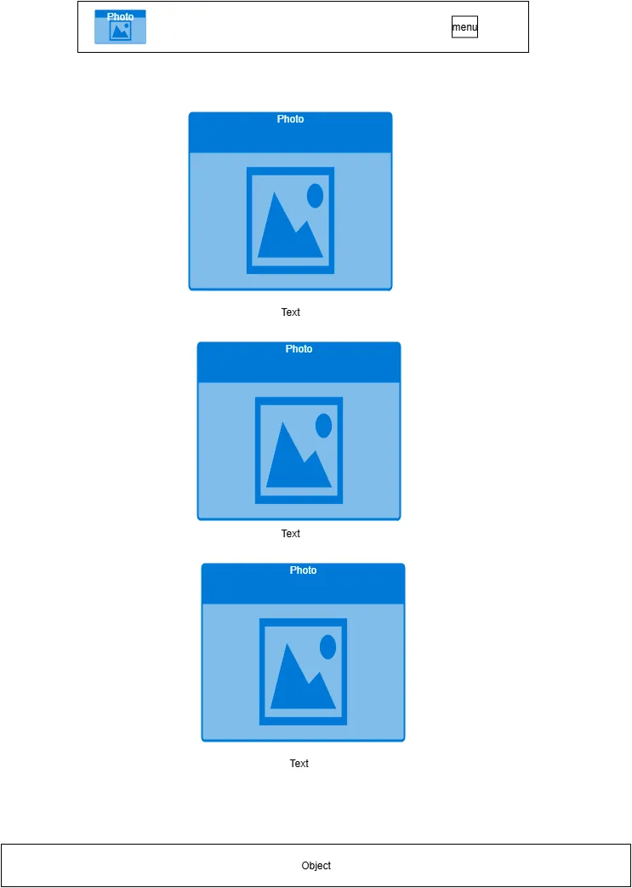
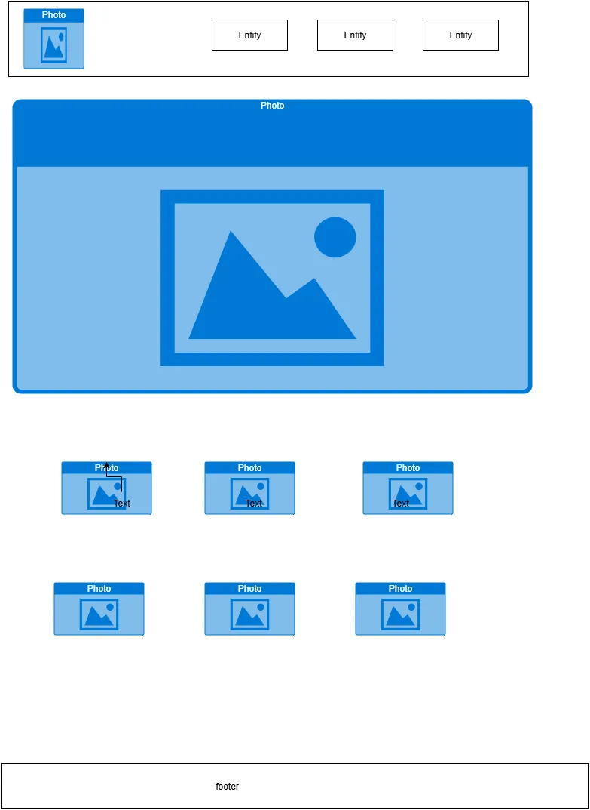

Virtual Academics
.
Provide an academic platform where: students can access resources (courses, exercises, tutorials, quizzes) and teachers can share materials, guide students, and use tools to track progress
The website should be in these colors.
Poppins
Roboto
Ubuntu

